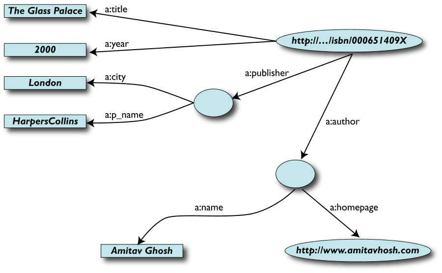
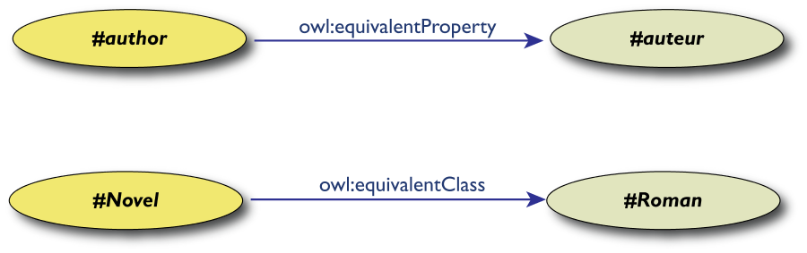
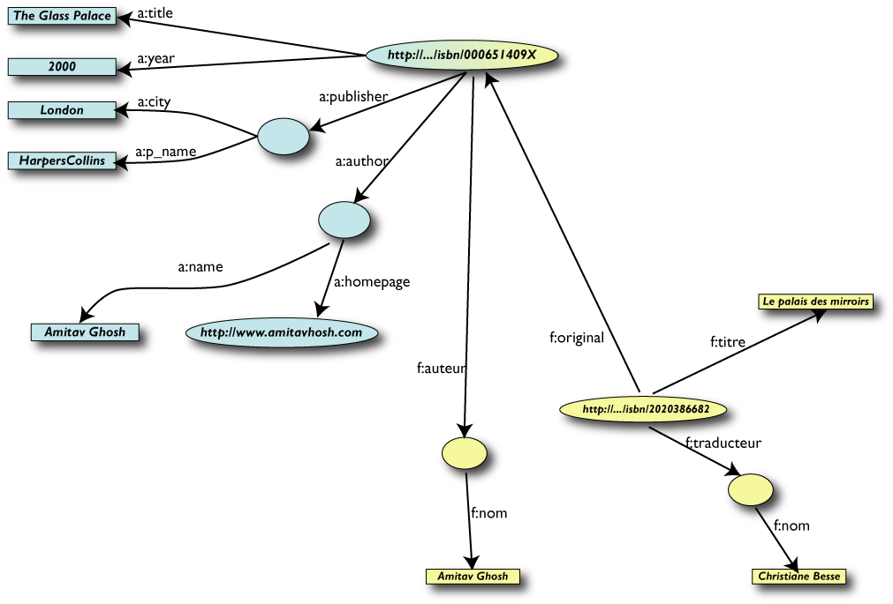

Ringraziamenti
- Questa presentazione utilizza anche materiale
predisposto da Ivan Herman (W3C Semantic Web
Activity Lead) e da Shawn Lawton Henry
(W3C - Web Accessibility Initiative)
- Il materiale di questa presentazione può
essere riutilizzato nel rispetto dei diritti di
proprietà intellettuale, secondo la normale prassi
scientifica, e delle regole del W3C
- Un ringraziamento a IWA-Italy per avermi
offerto l' opportunità di tenere questa
presentazione
- Un ringraziamento a Smau e-Academy per aver realizzato e reso
disponibile la registrazione audio dell' intervento
The Web is more a "social" creation than a technical
one…
Web e W3C
Il Web è ambiente sociale
“The Web is more a social creation than
a technical one. I designed it for a social effect - to
help people work together - and not as a
technical toy. The ultimate goal of the Web is to
support and improve our weblike existence in
the world.”
(Tim Berners-Lee - Weaving the Web, p. 123)
-
Valore sociale del Web: comunicazione
interpersonale, commercio, condivisione di conoscenza
- Rendere questi benefici disponibili a tutti,
indipendentemente da hardware, software, infrastruttura
di rete, lingua madre, cultura, posizione geografica,
capacità fisiche o mentali
World Wide Web Consortium (W3C)

“To lead the World Wide Web to its full potential
by developing protocols and guidelines that ensure
long-term growth for the Web”
- Fondato da Tim Berners-Lee in 1994
- Definisce Recommendation aperte (Web
Standards)
-
È un forum neutrale per creare consenso
sugli standard web
- Gli standard proposti non derivano da posizioni
dominanti sul mercato
- Gli obiettivi a lungo termine
-
Web for Everyone
-
Web on Everything
-
Knowledge Base, Advanced data searching and
sharing
-
Trust and Confidence
L' attività dei Working Group
Nascita di una Recommendation
The Web is more a "social" creation than a technical
one…
Pari opportunità per l'
accesso all' informazione
Accessibile perché …
Un sito web dovrebbe
deve essere accessibile per:
- norma di legge?
-
è un obbligo, spesso poco gradito
perché visto come fine a se stesso
- professionalità?
- comprensibilità
- usabilità
- qualità
-
è un buon motivo
- cultura?
- principi di base della convivenza civile
e del Web
- è la vera ragione
La disabilità è un concetto ampio …
-
International Classification of Impairments,
Disabilities and Handicaps (ICIDH), 1980
- Menomazione (Impairment)
- Disabilità
- Handicap
-
International Classification of Functioning,
Disability and Health (ICF), 2001
- Copre tutti gli aspetti della salute umana,
raggruppandoli in:
-
health domain (vedere, udire,
camminare, imparare e ricordare)
-
healt related domains
(mobilità, istruzione, partecipazione
alla vita sociale, etc.)
-
integra aspetti medici e sociali: per
ciascuna delle voci classificate, a ciascun
individuo vengono associati uno o più
qualificatori che quantificano il suo
"funzionamento"
- "funzionamento umano" in generale:
modello universale, copre l' intero arco della
vita (bambini e anziani)
-
attività invece di
disabilità
-
partecipazione invece di handicap
- Quindi … pensare accessibile
- L' accessibilità non è solo un
fatto tecnico
- Non si "rende accessibile" un sito, bisogna "
pensare accessibile", tenendo presenti le
esigenze (e le eventuali limitazioni) dei vari utenti
- E l' usabilità?
- Molti aspetti sono comuni
- L' obiettivo da perseguire è la usable
accessibility, che dà all' utente la
sensazione di inclusione e pari
opportunità
The Web is more a "social" creation than a technical
one…
Il W3C e la cultura dell' accessibilità
Componenti della Web Accessibility

- W3C sviluppa:
-
linee guida per l' accessibilità
(per Authoring Tools, Web Content, User Agents)
-
specifiche tecniche (HTML, XML, CSS, SVG,
SMIL, etc.)
WAI (Web Accessibility Initiative): guideline…
 Le tre
linee guida:
Le tre
linee guida:
-
Web Content Accessibility Guidelines
come creare contenuti Web accessibili
WCAG 1.0 (1999,
Recommendation)
e WCAG 2.0 (Public Working
Draft)
-
Authoring Tool Accessibility Guidelines
come progettare strumenti di authoring
utilizzabili da autori disabili, e che producono
contenuti Web accessibili
ATAG 1.0 (2000,
Recommendation)
e ATAG 2.0 (Working Draft)
-
User Agent Accessibility Guidelines
cosa devono fare gli sviluppatori di software per
migliorare l' accessibilità dei mainstream
browser a dei multimedia player per
consentire un migliore accesso alle risorse Web per le
persone affette da deficit uditivi, cognitivi, visivi,
fisici
(Browser, UAAG 1.0,
2002, Recommendation) e si
comincerà presto a lavorare per le UAAG 2.0
… e anche …
-
Accessibile Rich Internet Applications
-
WCAG 1.0
-
14 guideline con una serie di check
point (65 in totale)
- Ogni checkpoint ha un livello di
priorità
- Priorità 1: Deve
(must) essere soddisfatto,
altrimenti per uno o più gruppi sarebbe
impossibile accedere al contenuto.
- Priorità 2: Dovrebbe
(should) essere soddisfatto,
altrimenti, per uno o più gruppi potrebbe
essere difficile accedere all' informazione
- Priorità 3: Può (
may) essere considerato dallo sviluppatore
della pagina, altrimenti uno o più gruppi
potrebbero incontrare qualche
difficoltà nell' accesso all'
informazione.
-
Conformance
level
-
 Level "A": sono
soddisfatti tutti i checkpoint di Priorità 1
Level "A": sono
soddisfatti tutti i checkpoint di Priorità 1
-

 Level "AA": sono
soddisfatti tutti i checkpoint di Priorità 1
e 2
Level "AA": sono
soddisfatti tutti i checkpoint di Priorità 1
e 2
-
 Level "AAA": sono
soddisfatti tutti i checkpoint di Priorità
1, 2 e 3
Level "AAA": sono
soddisfatti tutti i checkpoint di Priorità
1, 2 e 3
-
La dichiarazione di conformità è
responsabilità del webmaster o del content
provider
WCAG 1.0: le 14 guideline (1999)
- Fornire alternative equivalenti per il
contenuto visivo e acustico.
- Non fare affidamento unicamente sul colore.
- Usare marcatori e fogli di stile e farlo in
maniera appropriata.
- Rendere chiaro mediante il markup l' uso del
linguaggio naturale.
- Creare tabelle che si trasformino in maniera
elegante.
- Garantire che le pagine che utilizzano le
tecnologie più recenti si trasformino in
maniera elegante.
- Garantire all' utente il controllo dei mutamenti di
contenuto dipendenti dal tempo.
- Garantire l' accessibilità diretta delle
interfacce utente incorporate.
- Progettare per garantire l' indipendenza dal
dispositivo.
- Usare soluzioni ad interim.
- Usare le tecnologie e le linee guida del
W3C.
- Fornire informazioni di contesto e
orientamento.
- Fornire meccanismi di navigazione chiari.
- Garantire che i documenti siano chiari e
semplici.
WCAG 2.0: a che punto siamo?
WCAG 2.0: i quattro principi
-
Percepibile
-
L' informazione e i componenti l' interfaccia utente
devono essere percepibili dagli utenti
(non possono essere invisibili a tutti i loro
sensi)
-
Operabile
-
I componenti dell' interfaccia utente devono essere
azionabili dagli utenti
(l' interfaccia non può richiedere un'
interazione che non è possibile per l'
utente)
-
Comprensibile
-
L' informazione e il funzionamento dell' interfaccia
utente devono essere comnprensibili per gli
utenti
(il contenuto o l' azione non possono essere al di
là della comprensione dell' utente)
-
Robusto
-
Il contenuto deve essere abbastanza robusto da poter
essere interpretato da un' ampia gamma di user agent,
incluse le tecnologie assistive
(a mano a mano che le tecnologie e gli user agent
evolvono, il contenuto deve rimanere accessibile)
WCAG 2.0: guidelines e success criteria
-
Quattro principi di progettazione
- Per ogni principio, le guideline (12 in
tutto)
- Per ogni guideline, sono definiti dei criteri di
successo (success criteria) da conseguire per
essere conformi allo standard
-
verificabili (automaticamente o con
intervento umano)
- permettono di definire meglio le guideline e
determinare la conformità
- sono raggruppati in tre livelli, che
rappresentano livelli crescenti di
accessibilità
- sono tutti essenziali per qualcuno
-
Differenze tra success criteria e
priorità
- Un esempio: la guideline 3.1 [online]
[local]
E le nuove tecnologie?
-
Obiettivi
-
Accettare tutte le nuove tecnologie, purché
non interferiscano con le tecnologie assistive
e le caratteristiche di accessibilità degli user
agent
-
"Accessibility-supported" Techniques
-
Tecnologie che funzionano correttamente con le
tecnologie assistive e le caratteristiche di
accessibilità degli user agent
-
Vincoli
-
Tutte le informazioni e le funzionalità
della pagina devono essere presentate utilizzando
tecnologie "accessibility-supported".
Si possono usare tecniche non "accessibility-supported"
se utilizzate per "enhancement"
-
Risultato
-
Maggiore flessibilità per situazioni
diverse (sito pubblico, intranet)
WCAG 2.0: le domande
- Documenti di riferimento
- Quando?
- Probabilmente entro inizio 2008
- I siti WCAG 1.0 saranno da rifare?
- Gli aspetti fondamentali non sono
sostanzialmente diversi
- I siti conformi alle WCAG 1.0 non
dovranno subire modifiche rilevanti
- Applicare subito le WCAG 2.0?
- WCAG 1.0 sono un documento stabile
- Le WCAG 2.0 sono più applicabili
alle tecnologie più recenti, o future, o non
W3C
- Si può essere in anticipo sui
tempi
The Web is more a "social" creation than a technical
one…
Condividere la
conoscenza
Spesso non è facile intendersi…
-
Utente
-
- Posso comprare la benzina per il
tagliaerba portando una bottiglia da
riempire?
- Il mixer del robot da cucina
LoChefPerfetto non funziona
-
Il CRM
-
- È vietato cedere a terzi
carburanti in recipienti non a
norma
- Il miscelatore del Mod.
CR/XXX32-123 può presentare degli
inconvenienti al sistema di accensione e
regolazione della velocità
I limiti del Web attuale
- Nel web tradizionale si rappresenta l'
informazione utilizzando:
- linguaggio naturale
- grafica, elementi multimediali, struttura della
pagina
- Spesso è necessario combinare le
informazioni (provenienti da fonti diverse)
-
Per gli esseri umani è facile ...
- dedurre fatti da informazioni incomplete
- creare e seguire associazioni mentali
- provare varie esperienze sensoriali
- aggregare le informazioni indipendentemente dalle
tecnologie utilizzate
- ... ma le macchine non sono intelligenti!
- non possono utilizzare informazioni parziali
- hanno difficoltà ad aggregare informazioni
strutturate in forma diversa
L' architettura del Semantic Web

-
Il Semantic Web ...
-
- è un' infrastruttura basata su metadati
per poter svolgere ragionamenti sul Web
-
estende, non sostituisce il web attuale
-
I metadati sono:
-
- Informazioni, elaborabili automaticamente
(machine understandable), relative a una
risorsa web o a qualche altra cosa
- ... data about data
- ... informazioni che possono essere utilizzate da
intelligent software agents per fare un uso
appropriato delle risorse
- ... dati ...
- ... che possono essere descritti da altri
metadati ...
Perché i metadati?
- Nel Web di oggi tutte le informazioni sono "
machine readable"
- Nel Semantic Web le informazioni devono essere "
machine understandable". Quindi occorrono:
-
nomi non ambigui per le risorse (URI)
- un data model condiviso per esprimere i
metadati (RDF)
- un modo per accedere ai metadati sul Web
-
vocabolari condivisi (ontologie)
Cos'è un' ontologia?
Jim Hendler
A set of knowledge terms, including the
vocabulary, the semantic interconnections and
some simple rules of inference and logic for
some particular topic
Studer et al. (1998)
An ontology is a formal, explicit specification of a
shared conceptualisation.
A 'conceptualisation' refers to an abstract
model of some phenomenon in the world by having
identified the relevant concepts of that
phenomenon.
'Explicit' means that the type of concepts
used, and the constraints on their use are explicitly
defined. For example, in medical domains, the concepts
are diseases and symptoms, the relations between them
are causal and a constraint is that a disease cannot
cause itself.
'Formal' refers to the fact that the ontology
should be machine readable, which excludes natural
language.
'Shared' reflects the notion that an ontology
captures consensual knowledge, that is, it is not
private to some individual, but accepted by a group.
Disaccordo o accordo?
- Molte definizioni diverse, ma
accordo sul concetto
- Un' ontologia include non solo i termini che sono
esplicitamente definiti in essa, ma anche la
conoscenza che ne può essere
derivata mediante un processo di
inferenza
- Un' ontologia cattura conoscenza consensuale
- "Little semantics goes a long way" (Jim
Hendler)
Il Semantic Web: la visione del W3C
-
Ipotesi e sfide
-
- il Web è intrinsecamente
distribuito
- le macchine possono accedere ad un insieme
strutturato di informazioni e a un insieme di
regole di inferenza da utilizzare per il
ragionamento automatico
- per ragionare sui dati occorrono le
ontologie
- fornire un linguaggio per esprimere dati
e regole per ragionare sui dati
-
esportare sul web delle regole da
qualunque sistema di rappresentazione della
conoscenza
-
Metadati
-
- informazioni, comprensibili dalla
macchina, relative a una risorsa web o a qualche
altra cosa
Il Semantic Web: le tecnologie W3C
-
Resource Description Framework (RDF)
-
- strumento base per la codifica, lo
scambio e il riutilizzo di metadati
strutturati
- consente l'interoperabilità tra
applicazioni che si scambiano sul web informazioni
machine-understandable
-
Web Ontology Language (OWL)
-
- linguaggio per descrivere
proprietà, vincoli, cardinalità, etc.
- permette di esportare ontologie in modo
interoperabile
Un grafo RDF…

Ontologie sul Web
- Le ontologie sono sul Web. Quindi:
- le applicazioni possono utilizzare varie
ontologie differenti, oppure ... ...
- ... le stesse ontologie, ma espresse in lingue
diverse
- le equivalenze tra termini, e le relazioni
intercorrenti tra di loro, possono diventare un
problema non banale
Esempio: equivalenza inglese-francese

Due fatti diversi?

Merging delle risorse identiche

The Web is more a "social" creation than a technical
one…
Riflessioni e
conclusioni
Una riflessione
“ The people who built the Internet and Web have
a real appreciation of the value of
individuals and the value of systems in which
individuals play their role, with both a firm
sense of their own identity and a firm sense
of some common good.
[…]
I was very lucky, in working at CERN, to be in an
environment that Unitarian Universalists and physicists
would equally appreciate: one of mutual
respect, and of building something very great
through collective effort that was well beyond
the means of any one person - without a huge
bureaucratic regime.
[…]
The system produced a weird and wonderful machine,
which needed care to maintain, but could take advantage
of the ingenuity, inspiration, and
intuition of individuals in a special way.
That, from the start, has been my goal for the
World Wide Web. ”
(Tim Berners-Lee - Weaving the Web, p. 208-209)
Conclusioni
-
Il web è stato concepito come ambiente
sociale
- L' accessibilità
- è nel "DNA del Web"
- è il risultato di un approccio
culturale, non un aspetto meramente tecnico
- significa anche superare le differenze
culturali
- Il Semantic Web è un' evoluzione del
web attuale che:
- apre prospettive enormi
- facilita la condivisione della
conoscenza
- Il W3C guida l' evoluzione del Web: attori o
spettatori?
Non chiedetevi:
cosa può fare il web per
me?
…ma…
cosa posso fare io per il
Web?
 … e il supporters
program
… e il supporters
program